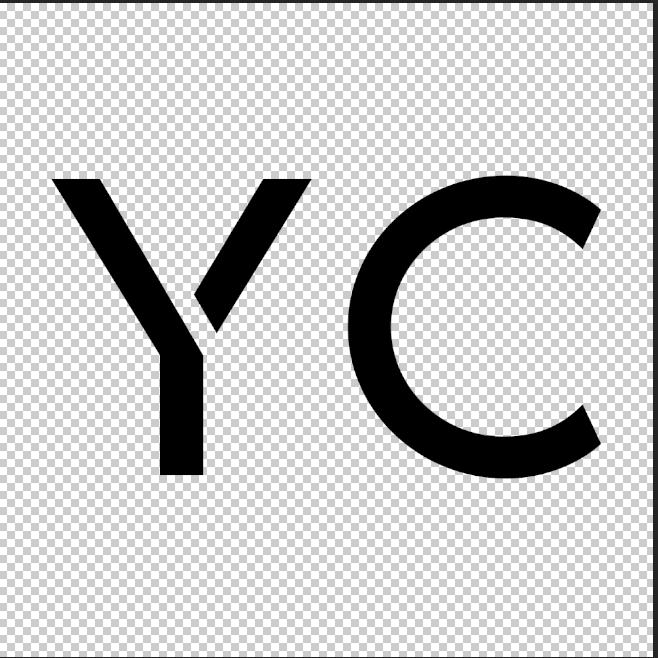
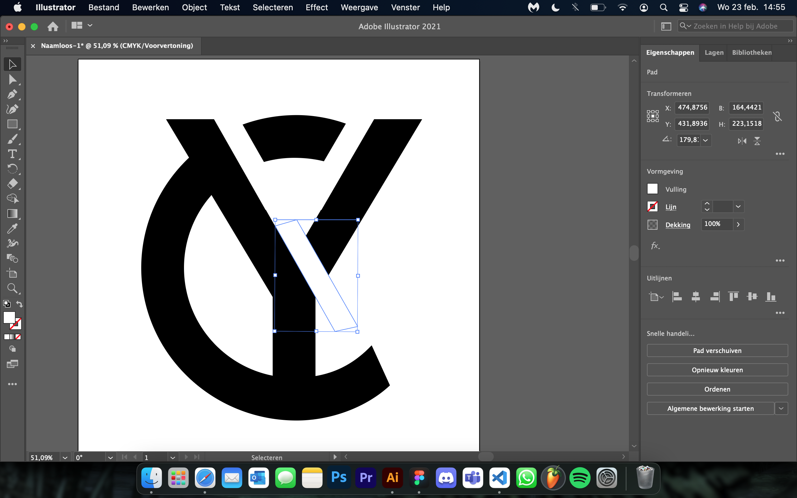
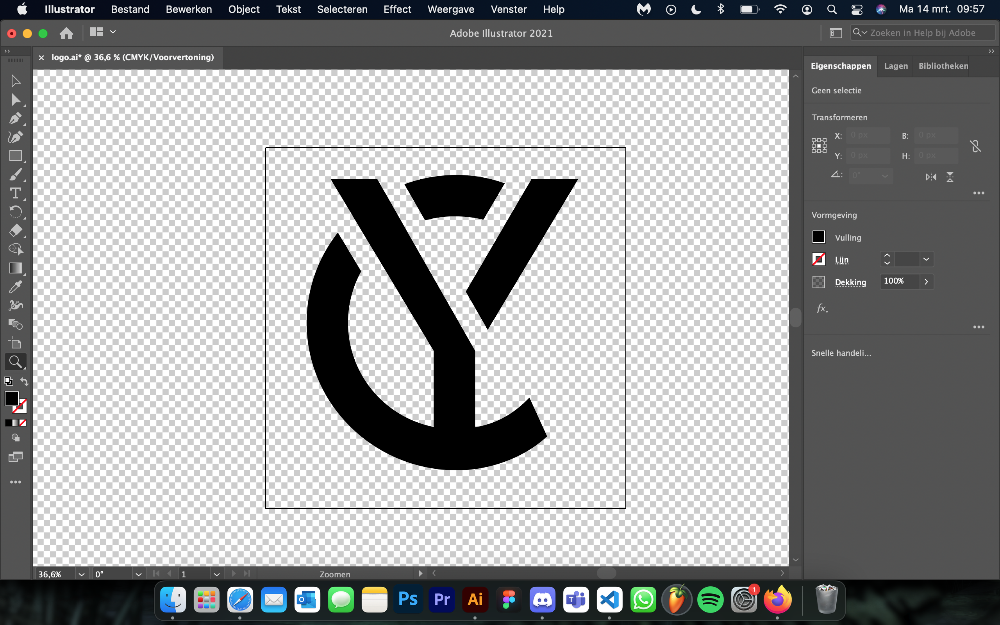

Voordat ik begon met het designen van mijn website dacht ik dat het een slim idee was om een logo te hebben zodat je een watermark hebt waar mensen jou mee kunnen onderscheiden van anderen, dus daar begon ik direct aan. In plaats van mijn logo te ontwerpen in Adobe Illustrator, gebruikte ik Adobe Photoshop omdat ik nog nooit eerder gebruikt had gemaakt van Illustrator.
Ik wist al dat ik mijn initialen erin wilde verwerken, dus ik begon met het typen van de letters Y en C waarmee ik vervolgens ging kijken welk lettertype ik het beste vond. Uiteindelijk kwam ik op de font "DESIGNER", dit was een font die er zo uit zag.
Zoals je ziet, zit er een streep tussen de "steel" en de rechtse "vleugel" van de letter Y. Dit bracht mij op het idee om de letter C samen te voegen met de letter Y in dezelfde stijl als de letter Y, dus uiteindelijk kwam ik op dit.
Na feedback gekregen te hebben van Frank kwam ik op de conclusie dat het logo zeker gemaakt moest worden in Illustrator en niet in Photoshop. De lege strepen tussen de letters waren ongelijk aan de originele streep en Photoshop is niet het programma waarmee je logo's hoort te maken. Dus ik begon met het logo opnieuw te ontwerpen in Illustrator, na heel veel tutorials gekeken te hebben over de basics van Illustrator. Na de 2 letters samengevoegd te hebben ging ik de originele streep na-tracen zodat alle lege strepen dezelfde grootte zouden hebben
Na dit nagetraced te hebben knipte ik deze vorm uit bij elk punt waar de C de Y aanraakte, hiervoor gebruikte ik de "Pathfinder"-tool zodat ik de vormen gemakkelijk uit kon knippen. Na alle vormen uitgeknipt te hebben, uiteindelijk kwam ik op dit.
Qua feedback heb ik van mijn medestudenten Cas en Rens te horen gekregen dat het er goed en strak uitzag. Soortgelijke feedback kreeg ik van mijn vrienden die zelf geen ICT achtergrond hebben of iets dergelijks. Mijn docenten Evert en Sebastiaan vonden het lijken op het logo van Yellow Claw, maar vonden het buiten dat goed passen bij mij portfolio.
© 2022 Yassin Chehlaoui